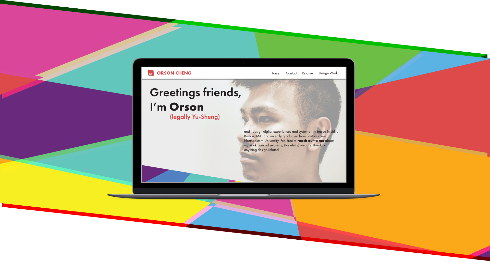

Orson Cheng Design
Web and Mobile Site
The Gist
This website, my UI/UX portfolio, is an extension of my graphic design portfolio. While I originally had most of my UI/UX content as a section on my graphic design site, I wasn't too pleased with the limited amount of control I had over the specifics of the portfolio site that I had created through SquareSpace. I decided that there would be no better way to present my work within this field while also showcasing my skills through creating my own website from scratch, and this is the result.
Not that it really matters to anybody, but I'm really super proud of my
work on this portfolio site!
I took the things I didn't like about using a
pre-made template, looked through how to make it something I would be happy
with, and executed upon this vision. I went through a full process from
identifying what I disliked about what was available, sorting through
different solutions, drafting up ways to incorporate the solutions into
my product, testing the different layouts to see which ones were optimal
for what I intended, to finally bringing forth and publishing something
that I'm super happy with.
This is definitely still a work in progress,
but I'm glad that I took the time to learn what I did and go through the design
process to create this site!
Fully Responsive Design
Tablet Breakpoints
Mobile Breakpoints
UI/UX Problems
As a portfolio site, the main intention for the product is to keep the
user engaged and ready to view more of my work, while keeping the
information accessible and digestible. I needed to be able to present my
work in a manner that would not be overwhelming to take in, yet still
expressed enough about my work to be informative about my design process.
A major factor that motivated me to create this site was the
problems that I experienced with my
SquareSpace portfolio. Control over
individual elements was very limited, and as a result, I had a hard time
creating moments of interaction that were meaningful and delightful to the
user. I had to go through and devise a strict system to try to inform users
of interactables and links, and had no ability to have my images animate as
I desired. The navigation was also quite terrible once the minimal breakpoint
for the navigation was reached. I would be able to pull up a side menu for
my navigation, but the content screen would be locked into place until the
side menu went away. These problems informed me of many design choices that
I chose to make in creating this current site, seeking to create something
that wouldn't cause the problems to the user that my other portfolio did.
The main problems I had when creating this site was keeping the
information in parcels that were easy to take in, while keeping the
experience of navigating the site enjoyable and unimpeding.
UI/UX Solutions
To handle the above problems, I thought the best thing to do was to cut straight to the point with my content. I created the site to feature my work heavily on the home page, and have it be the dominant element on the landing page for my website. To keep navigation crisp, I kept the important pages available at all times in a navigation bar at the top, and employed shapes that cut diagonally across the screen to create interest in the process of scrolling through the page. The diagonals also serve a secondary purpose in informing the user of additional content on screens where the scene may appear complete in the viewport at first sight. Lastly, to keep navigation easy, I had all the elements that can be interacted with behave in the same way within the system I had applied to the site, having all the links change to a red color on hover.
Experience Flow
I wanted the experience of visiting my portfolio site to be intuitive
and require minimal explanation. As such, the diagonal elements serve an
important purpose. These diagonal lines peek at the edges of the welcome
and contact information screens, encouraging users to scroll into them
to find out what content is available there. I also wanted to put in a
lot of little moments of delight, and assigned a system of animations
that would occur in response to user interaction. This is primarily used
to inform users of what can be interacted with, and to keep users
interested in venturing forth into what the interactions led to. Lastly,
I opted to have a navigation bar present at all times because there is a
lot of content to parse through for each project, and having the navigation
options be only available at the top of every document would cause for
a lot of frustration.
As can be seen from these experience flow
diagrams, I intended for all the pages to be closely linked to each other
to create ease of navigation. Each page is never more than a click away
from any other page, and this interconnectednedd is supplemented by the
navigation bar at the top of every page and the links to the projects at
the bottom of all the project pages.
Visual Design System
The underlying idea behind the visual design system of my portfolio site
was to create a clear hierarchy of what was going on. I focused on the
material of the site, looking at how to more accurately portray the
different layers that went into the site.
Obviously, there had to
be the most flexible and clear layer at the very top, as it was necessary
for displaying my content. I had a specific red I had in mind
(#DC4949) that was a carry over from my graphic design portfolio, and I
had that selected as the highlight color on my site for all my links and
text of emphasis. Beneath this top layer, I had decided on alternating
between two different styles of layers, one being a pattern of bright
color blocks, and the other being images with a little bit of chromatic
aberration. The color pattern is built with polygons of seven different colors,
an orange (#FBA919), a yellow (#FCEE21),
a green (#6DBE45), a blue (#5CB2E4),
a teal (#64C6BD), a pink (#D94779),
and a purple (#69297C).
To further emphasize the idea of layers within the
site, I had my images be presented on cards that would slide into the
pages they were on (much like paper or card stock does). I introduced a
parallax scrolling effect to my home screen to create a further emphasis
on the layers involved in my site as well, and employed shadows to make
clear that the navigation bar was a layer on top of the content of my pages.
Interactive Elements
For this page, I designed a system that can be seen in the style guide
for interactive objects. When seen on mobile and tablet devices (which I set
to be anything with a viewport under 1280px across), these elements are highlighted with the color
of red (#DC4949). On a computer, these interactive elements
are animated upon a mouse hover as a response to the user.
When links are
available in text, the text is written in boldface, and turn red on hover.
On
mobile, the text is in boldface and red.
This is a demo for linked text.
When images were the carriers of links, hovering the image produced a caption
that would gather/drop into the image. This caption would be produced with white
text on a red field, with the opacity lowered to allow for visibility of the
image it covered.
On mobile, the caption and a field of red is overlayed over
the image.
This is a description of the image.
Icons reacted differently yet. I created a small library of icons to use for
my page, namely for the purpose of navigating between my different profiles. These
icons would grow in size upon hover, and see its graphic change to a descriptive
caption.
On mobile, the graphic icon is used with a caption beneath to denote
its destination.

ICON
DESCRIPTION